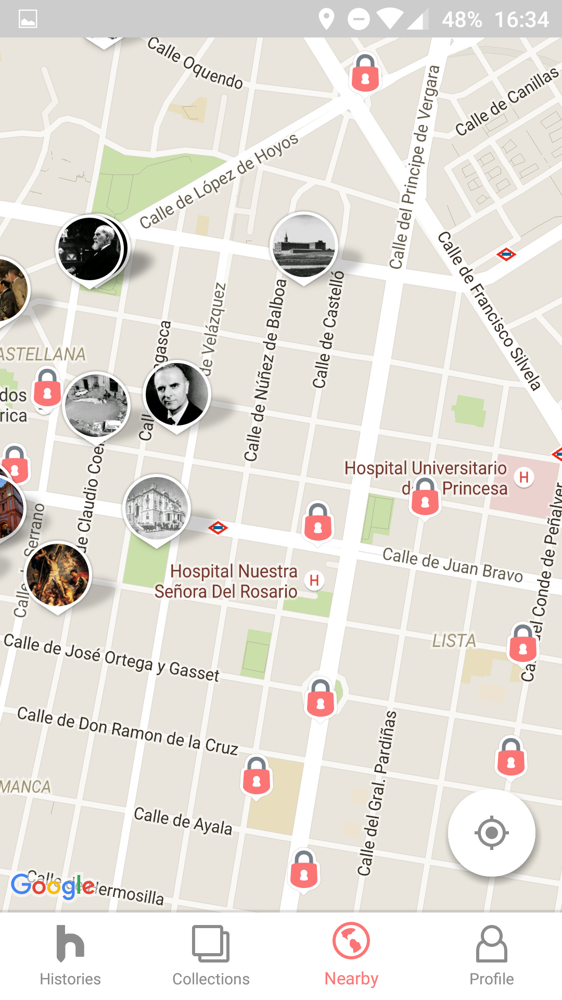
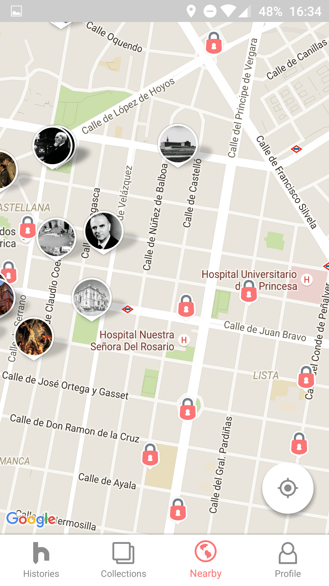
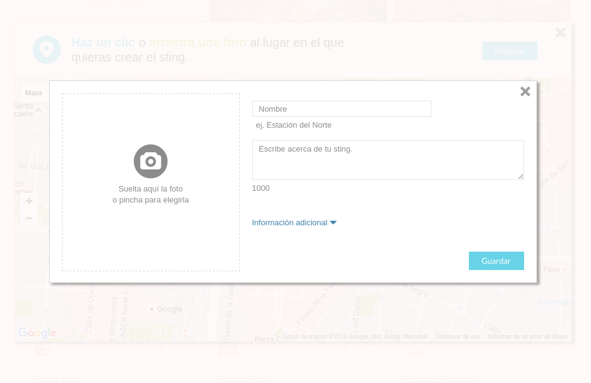
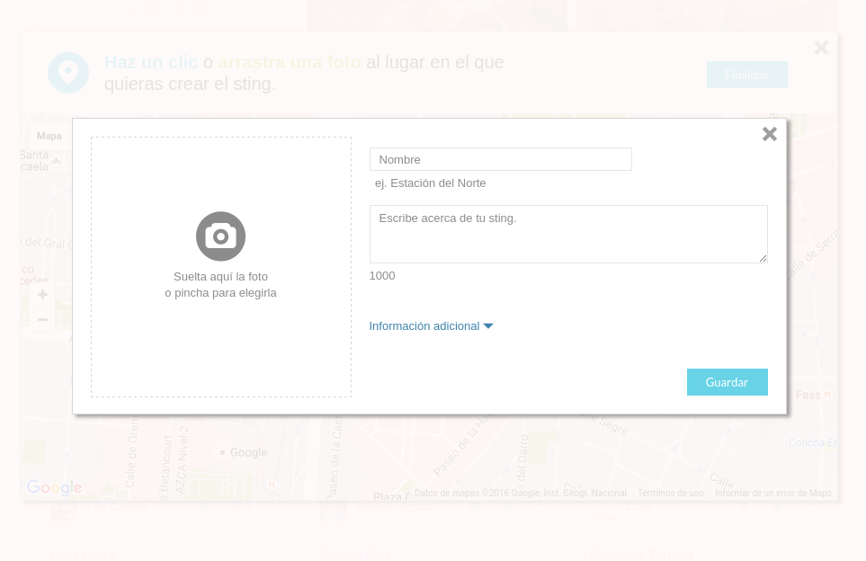

I'm currently the Head of Engineering at Filestage.io. I'm a technology leader and Computer Science Engineer with over 16 years of hands-on experience, consistently coding while guiding software development and driving business growth in startup environments. Passionate about building high-performing teams and leveraging technology to delight customers.
In our third and last startup pivot we developed an app that teaches you
history when walking around. When you walk by a historical site you will
receive a notification with a short article which tells you an interesting
story of what happened there. Our app was downloaded 500,000 times and
used by more than 100,000 users each month, included more than 5,000
geolocated history articles of Spain and London and received an average
rating of 4.5 out of 5 from 2,000 reviews.
During this time we were granted with 50k€ and we managed to get 1% of the
users to pay 6€ on average unfortunately we couldn't reach a large enough
user base to create a profitable business.
In this last stage we were 5 in the team although 2 were working full time on the content. During this stage our main focus was to take a data driven approach when taking decisions. We measured user activity and behaviour to learn which features made sense and which could be discarded. We started to control our software quality with metrics too and published to production apps with 99.5% crash-free sessions.
I extended our backend so it could persist the progress of the users in our new app. The architecture had to handle the requests of thousands of users (more than 100 requests per second), we had no problem handling this load due to our scalable architecture.
Lots of the effort was dedicated to develop a low-battery consumption algorithm to unlock content as the user passed through certain locations even with the application in background.
Replicated the app developed for Android.
 



In our second pivot we created an app builder. This app builder was
created to allow city councils and bloggers to easily create apps that
served as tourist guides. The user would create points on a map with
photographs, descriptions, etc. and then an app would be created with that
content automatically.
Our most important milestones during this time were: to be granted with
206k€ by the Spanish government, to release 200 apps with our app builder
and to reach more than 250,000 users. Unfortunately we couldn't convert
city councils into paying customers and therefore failed to achieve a
successful business model.
In this second stage we were 4 in our team we had a frontend developer and
a graphic designer working with us. Thanks to our previous well thought
out architecture we managed to reuse great part of our previous
technology.
We decided to develop our apps natively even though it meant duplicating
the work because at the time no cross-platform development framework
allowed us to achieve the product quality we desired.
Created a script to automatically create mobile apps. It downloaded the content the user had uploaded, built an offline map and created the apps from the iOS and Android templates. It was a real challenge to compress the offline maps so they didn't take lots of space in the apps.
Modified our previous web based CMS to allow users to fill the app information and create apps from their content.
Created a template app from which all our apps would be generated. The app was used as a tourist guide, it contained an offline map with the points of interest and each point had images and text. Users could log using their Facebook accounts to share, like or comment the points of interest.
Replicated the template app developed for Android.


In this first stage our startup developed a location based social network. People collaborated in interest groups to locate things they liked on a map. For example a group could spot and locate: cool graffitis, vegan restaurants or fishing spots. We developed a working product for the web and iPhone where 1,000 users signed up but we failed to reach a critical mass of users for the product to generate real value.
During this stage we were 4 in our team, we had a frontend developer and a
graphic designer working with us. We successfully managed to ship a high
quality product with very little resources and time. But, we did fail to
build a simple product (MVP) as we jammed the product with too many
features.
One of the best decisions we took was to split the platform into multiple
services. One that took part of the core business logic providing web
services to use it (API) and two other parts: the web client and the iOS
app. Another key decision to keep costs down was to use only one
programming language in almost all parts of the development which greatly
reduced context switching improving our efficiency.
Thought out an architecture that would last and would be useful in the long run, the result was an stateless server that could be easily scaled. Offered a REST API to the web a mobile app clients to authenticate, upload content, chat and query content nearby.
Created a dynamic web app that allowed users to upload images while interacting with a map to localize them which proved to be a challenge and a great learning experience.
Built an app that could do all the functionalities of our web. Users took pictures with the app and then the image was uploaded with the current user location. A map showed all the content around and users could chat with each other.


 

Our team developed and maintained an in house derivatives pricing platform. Lot of effort was put to improve the quality of the software creating tests and refactoring code. I Led the automation of the deployment to production reducing the time. I created an aspect-programming framework to parse and serialize XML to considerably reduce the code needed develop when communicating with the valuation layer.
Involved in the development and maintenance of a financial web portal, I managed to drastically improve the page loading times. Did a case study to analyze if changing the web portal framework would bring a clear benefit. Applied a new learned technology to create a financial calculator for customers to calculate their loan payments.
Andrew Ng a recognized machine learning researcher taught me the history and basics of machine learning. Focusing on logistic regression and neural nets in the course we applied this algorithms to real world problems.
Lots of knowledge was condensed in these years which covered both the most technical and abstract parts of computer science. Learning algorithms and data structures, programming in low-level and high-level languages, developing hardware and web pages, or learning about operating systems, compilers and networks.